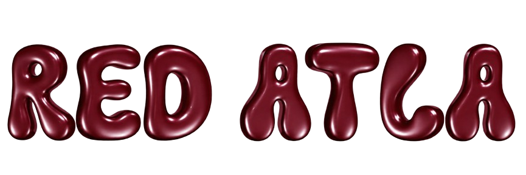
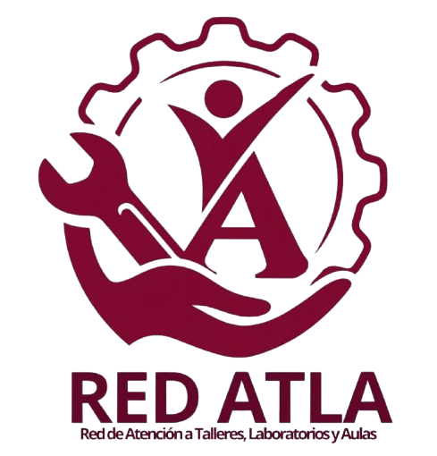

¿Qué es?
La Red ATLA es es un servicio de atencion diseñado para que alumnos que se encuentren realizando su servicio social puedan make uso de los conocimientos previamente adquiridos durante su estancia en la institución, mediante la reparación, mantenimiento y cuidado de equipo y/o inmoviliario presente en aulas, talleres y laboratorios.
¿Pára qué sirve?
El proyecto permite a alumnos a partir de 4to semestre realizar servicio social realizando reparaciones de daños y mejora de espacios académicos, a través de los reportes de incidencias realizados por la comunidad académica.